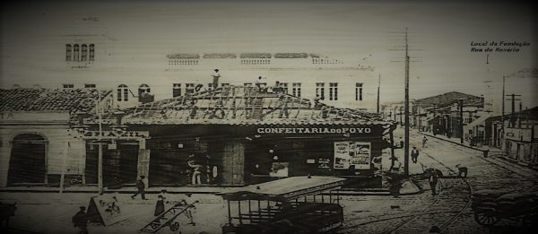
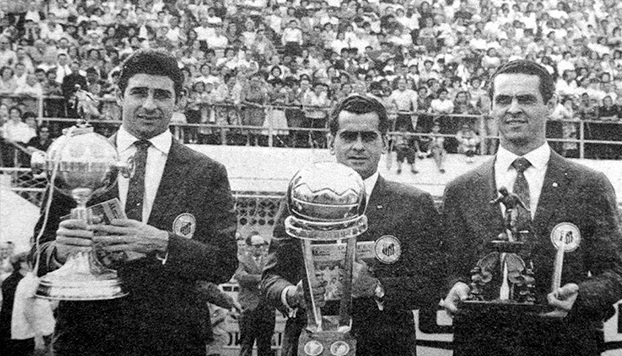
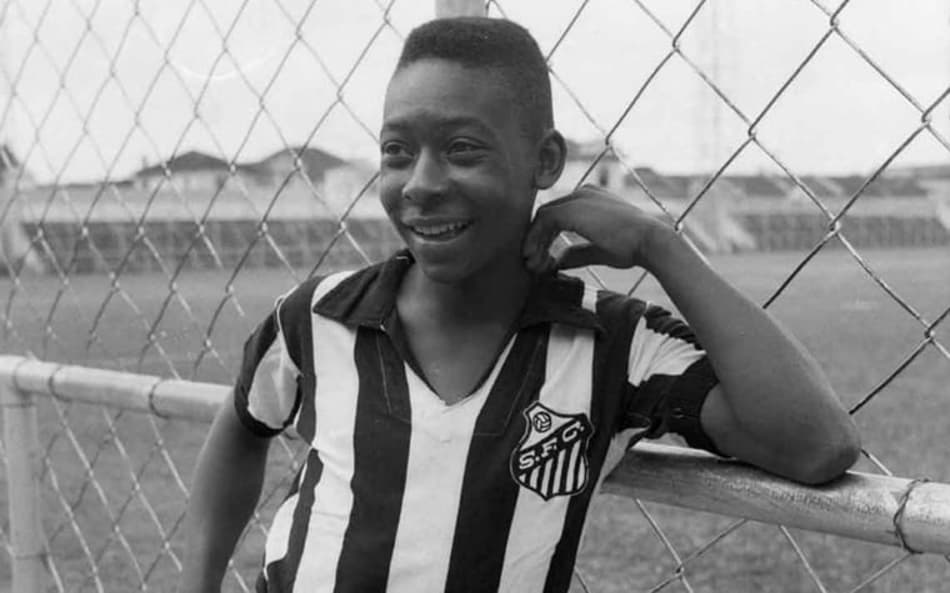
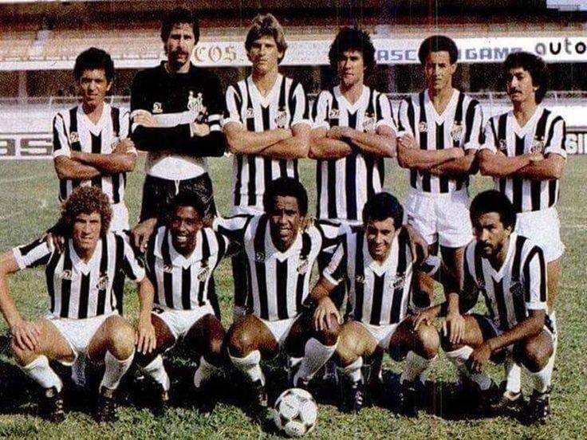
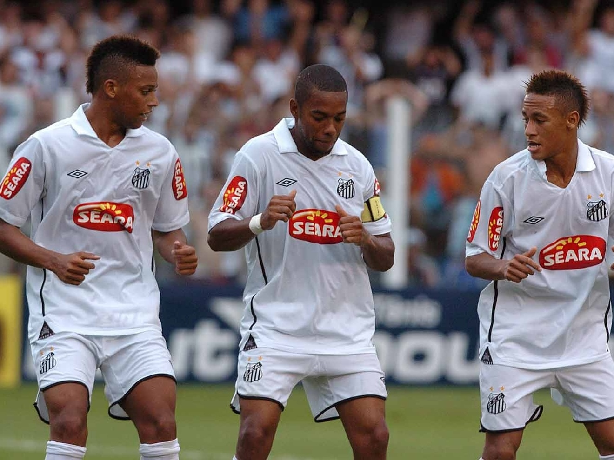
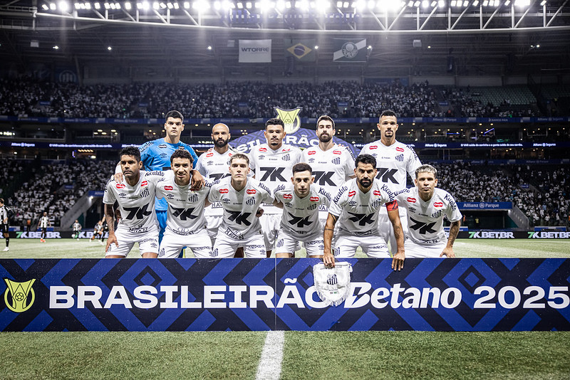

História do Santos Futebol Clube
Fundação
O Santos Futebol Clube foi fundado em 14 de abril de 1912, na cidade de Santos, litoral de São Paulo, por iniciativa de três esportistas: Raimundo Marques, Mário Ferraz de Campos e Argemiro de Souza Júnior. Desde o início, o clube já se destacava pelo futebol ofensivo e habilidoso.
Primeiras Conquistas
Ao longo das primeiras décadas, o Santos conquistou títulos regionais e ganhou espaço no cenário paulista. Na década de 1950, começou a montar elencos fortes que logo chamariam a atenção nacional.
A Era Pelé
Em 1956, um jovem de 15 anos chamado Pelé chegou à Vila Belmiro. Pouco tempo depois, ele se tornaria o maior jogador da história do futebol, levando o Santos a um patamar mundial.
Entre 1960 e 1970, o Santos viveu seu período mais glorioso, conquistando dois títulos da Copa Libertadores da América (1962 e 1963), dois Mundiais Interclubes (1962 e 1963), além de dominar o cenário nacional com múltiplos títulos brasileiros.
Essa fase consagrou o Santos como uma das maiores potências do futebol mundial, encantando multidões com seu estilo ofensivo e inovador.
Anos 1980 e 1990
Após a saída de Pelé, o Santos passou por um período de menos conquistas expressivas. No entanto, continuou revelando grandes talentos e mantendo sua tradição de jogar um futebol ofensivo. Nos anos 1990, voltou a conquistar títulos importantes no cenário nacional.
A Nova Geração: os Meninos da Vila
No início dos anos 2000, o Santos revelou uma nova geração de craques conhecidos como “Meninos da Vila”. Em 2002, liderados por Robinho, Diego e companhia, o clube conquistou novamente o Campeonato Brasileiro, repetindo o feito em 2004.
Em 2010, o time voltou a encantar o Brasil com Neymar, Paulo Henrique Ganso e outros talentos, conquistando a Copa do Brasil e, no ano seguinte, a Libertadores da América de 2011.
O Santos Hoje
Atualmente, o Santos continua sendo referência mundial em formação de jogadores, mantendo sua tradição de revelar talentos e jogar de forma ofensiva. A Vila Belmiro segue sendo um dos estádios mais icônicos do futebol brasileiro, e a camisa alvinegra ainda inspira milhões de torcedores ao redor do mundo.
